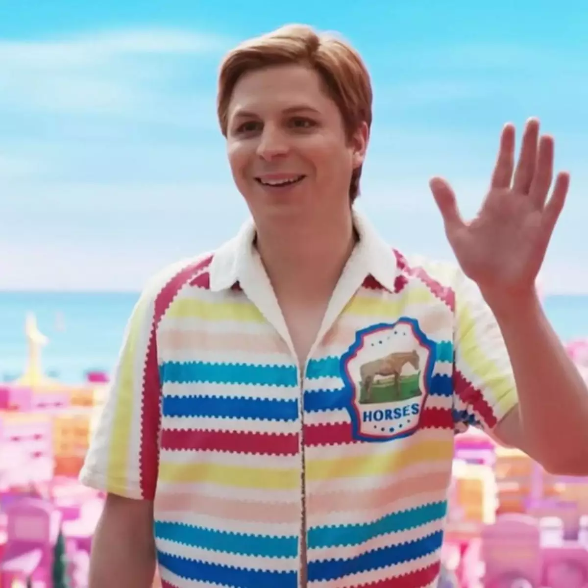
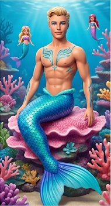
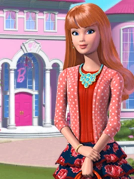
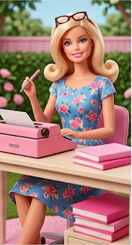

Barbie
Principal protagonista do universo, pronta para exercer
diversas profissões e inspirar todos à sua volta.

Ken
O parceiro leal da Barbie, famoso por seu estilo
praiano, carisma e paixão por patinação.

Barbie Estranha
A sábia conselheira da Barbie Land que conhece
os segredos da ponte entre os mundos.

Barbie Presidente
Líder inteligente e justa que governa Barbie Land,
garantindo a harmonia do ambiente.

Barbie Médica
Dedicada a cuidar da saúde e do bem-estar de todos
os habitantes da cidade.

Barbie Sereia
Habitante dos oceanos de Barbie Land, traz magia
e aventura para o fundo do mar.

Allan
O melhor amigo do Ken, único e divertido,
com um guarda-roupa muito versátil.

Barbie Advogada
Especialista em leis, sempre defendendo
a justiça com muita determinação.

Barbie Física
Cientista genial premiada por suas descobertas
revolucionárias no universo.

Ken Sereio
Protetor dos oceanos e amigável nadador
das praias de Barbie Land.

Midge
A carinhosa e inseparável melhor amiga
da Barbie no cotidiano.

Barbie Escritora
Autora de grandes best-sellers cheios
de imaginação e criatividade.